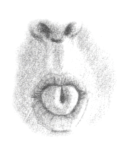

1. Stočte jazyk tak, jak je to znázorněno na obrázku níže:

2. Nadechněte se jazykem a držte ho přitom stočený
3. Zavřete ústa a zadržte dech na dobu 5-10 počítání (podle toho, co je vám příjemné).
4. Pak pomalu vydechněte nosem
Výše uvedené představuje jedno opakování.
______________________________________
Obrácené Sithali od Azazela
1. Nadechněte se nosem.
2. Se zavřenými ústy zadržte dech na dobu 5-10 počítání (podle toho, co je vám příjemné, zadržení dechu zde není povinné).
3. Stočte jazyk tak, jak je to znázorněno na obrázku výše.
4. Pak vydechněte ústy se stočeným jazykem
Výše uvedené představuje jedno opakování.
© Copyright 2009, 2013, 2018, Joy of Satan Ministries;
Library of Congress
Number: 12-16457
ZPĚT NA HLAVNÍ STRÁNKU SATANSKÉ MOCENSKÉ MEDITACE